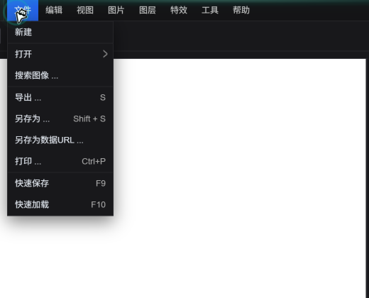

把工程存下来，明天接着改
这是最典型的「丢掉一个下午」的方式：改完图，用 【文件】→【另存为】 存了文件，过两天发现任何看图软件都打不开——因为它根本不是图片，是工程文件。
【文件】→【另存为】 写的是完整图层数据，一个 JSON，记录了每个图层、位置、滤镜栈和画布尺寸。【文件】→【导出】 写的是压平后的 PNG、JPG、WEBP、GIF、BMP 或 TIFF——一张合并好的图，没有图层，可以直接上传。同一个菜单，两个世界。

你需要哪一个
| 你想…… | 用哪个 | 得到什么 |
|---|---|---|
| 以后继续按图层改 | 文件 → 另存为 | JSON 工程文件 |
| 发出去、上传、发布 | 文件 → 导出 | PNG / JPG / WEBP / GIF / BMP / TIFF |
| 在当前浏览器里临时存一份 | 文件 → 快速保存（F9） | 存在浏览器本地存储里 |
| 把这份临时的读回来 | 文件 → 快速读取（F10） | 上一次快速保存的状态 |
导出图片
对话框里有 文件名、另存为类型、质量（1–100，默认 90）、显示文件大小 勾选，以及 保存图层 选项。正常出图：类型选 JPG 或 PNG，质量留 90，有上传限制就勾上显示文件大小，导出。
注意导出的快捷键是 S，Shift + S 打开的是另存为。按错的概率不低，症状就是「这个文件除了本编辑器谁都打不开」。
保存工程
这里只提供一种类型：JSON，说明是完整图层数据。命名保存，之后用 【文件】→【打开】→【打开文件】 就能读回来——打开对话框同时接受图片和 JSON。每个图层的位置、不透明度和滤镜都会原样回来。
两个限制值得知道。一，位图内容都嵌在 JSON 里，不引用外部文件，所以体积可能不小（多图层工程几 MB 很正常）。二，文字图层只有在浏览器里有那个字体时才恢复为可编辑文字，字体缺失会被替换。
快速保存，以及它唯一的风险
【文件】→【快速保存】（F9） 把工程写进浏览器本地存储的一个固定位置，【文件】→【快速读取】（F10） 读回来。它确实好用：关掉标签页，重新打开编辑器，按 F10，东西还在。
风险在于它只有一份，而且存在浏览器里。清理站点数据、用无痕模式、换浏览器、换电脑，快速保存都不在了。请把 F9 当成「同一台机器上跨会话的方便」，绝不要当成备份。
一条能活下来的流程
- 动手之前先存一份 JSON 工程，文件名带上日期。撤销历史不存，但图层都在。
- 改完了导一张图，两个文件放同一个文件夹：
poster.json和poster.jpg。 - 永远从工程重新导出，不要从导出的图再改。 拿 JPG 改完再存，每存一次压一次；回工程改，画质还停在原始水平。
- 客户要接着改就给 JSON，要看看效果就给 JPG。
出问题之后怎么救
用另存为存过、现在哪里都打不开：先看扩展名。一个叫 photo.png 的 JSON，在任何看图软件里都会失败，看起来像文件损坏。改成 .json 再在编辑器里打开，图层应该会回来。
如果浏览器直接关掉、什么都没存，先确认有没有快速保存：重新打开编辑器按 F10。读不出来就是没了——这里没有服务端历史，而「没有服务端」正是图片不外泄的原因。
常见问题
存下来的文件任何看图软件都打不开，是坏了吗？
多半没坏。【文件】→【另存为】写的是 JSON 工程，不是图片。先看扩展名，如果是 .json，在编辑器里用【文件】→【打开】→【打开文件】重新读入，图层会回来。要图就用【文件】→【导出】。
清理浏览器数据之后，快速保存还在吗？
不在。快速保存把工程放在浏览器本地存储的一个固定位置。清站点数据、无痕模式、换浏览器、换机器，都会丢。在意的东西请另存一份 JSON 工程。
JSON 工程会保存撤销历史吗？
不会。它保存图层、位置、不透明度、滤镜和画布尺寸，撤销步骤不在文件里。重新打开就是一段新的历史，所以危险操作之前先存一份，别指望重开之后还能撤销。
相关教程推荐
做两个图层，另存为 JSON，关掉标签页再打开，载入那个 JSON，然后导出一张 JPG，对比哪个文件浏览器能直接显示。